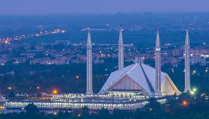

Amazing Pakistan
Hunza Valley
As per Wikipedia,Hunza (Burushaski: ہنزو, Wakhi: "shina") is a mountainous valley in the autonomous Gilgit-Baltistan region of Pakistan. Hunza is situated in the northern part of Gilgit-Baltistan, Pakistan, bordering with Khyber Pakhtunkhwa to the west and the Xinjiang region of China to the north-east.
Swat

As per Wikipedia,Swat's average elevation is 980 m (3,220 ft),resulting in a considerably cooler and wetter climate compared to most of Pakistan. With lush forests, verdant alpine meadows, and snow-capped mountains, Swat is one of the country's most popular tourist destinations.
Swat Valley, especially lower Swat, is a year-round tourist destination. However the main tourist season for Swat begins in spring and lasts till autumn (April to October).
Islamabad
As per Wikipedia, Islamabad (/ɪsˈlɑːməˌbɑːd/; Urdu: اسلام آباد, Islāmābād) is the capital city of Pakistan, and is federally administered as part of the Islamabad Capital Territory.
The city has the highest cost of living in Pakistan, and its population is dominated by middle and upper middle class citizens.
Lahore
As per wikipedia, Lahore (/ləˈhɔːr/; Punjabi: لہور; Urdu: لاہور, pronounced [lɑːˈɦɔːr]) is the capital of the Pakistani province of Punjab, and is the country's 2nd largest city after Karachi, as well as the 18th largest city proper in the world.
Lahore is a major center for Pakistan's publishing industry, and remains the foremost center of Pakistan's literary scene. The city is also a major centre of education in Pakistan, with some of Pakistan's leading universities based in the city